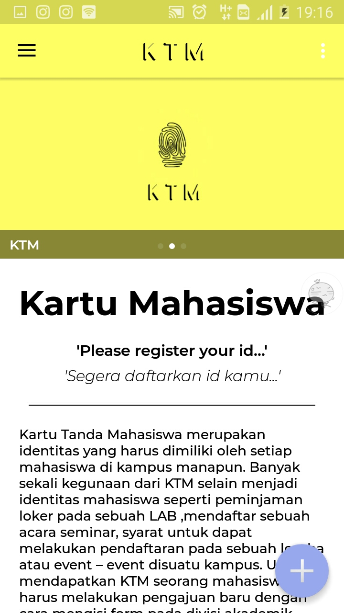
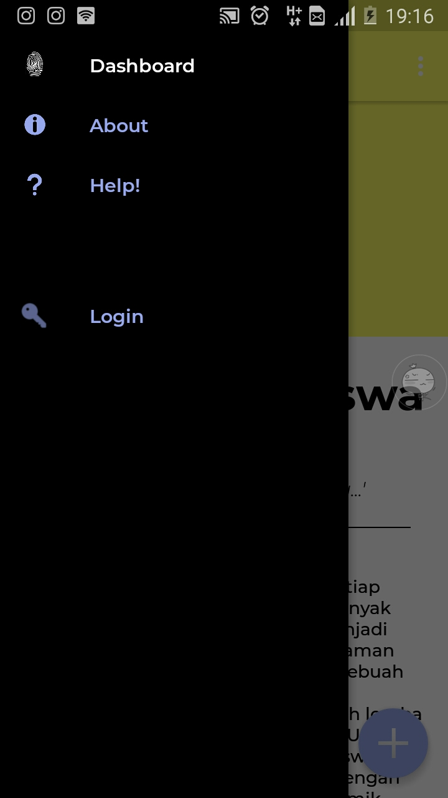
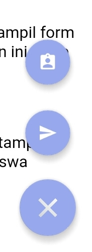
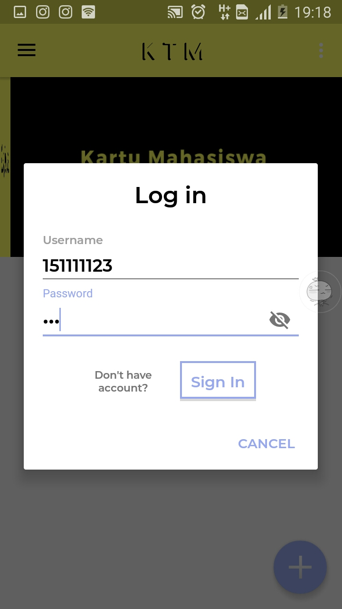
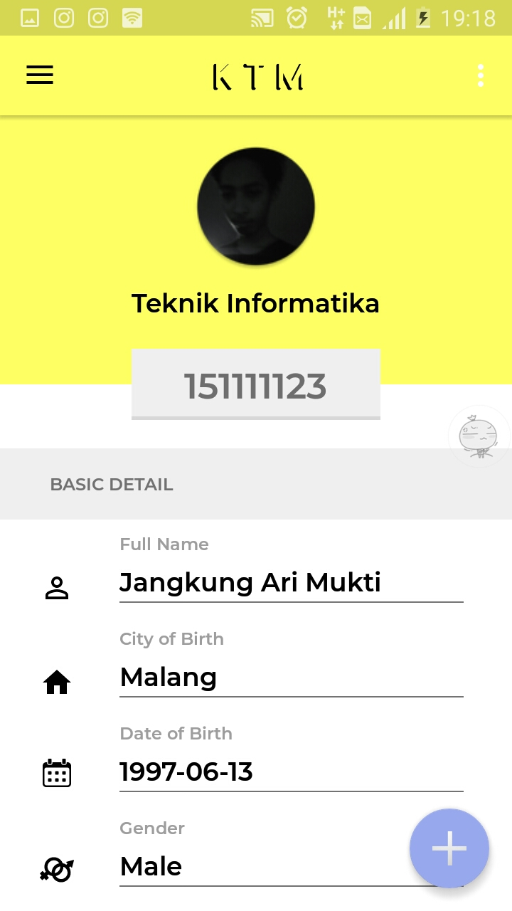
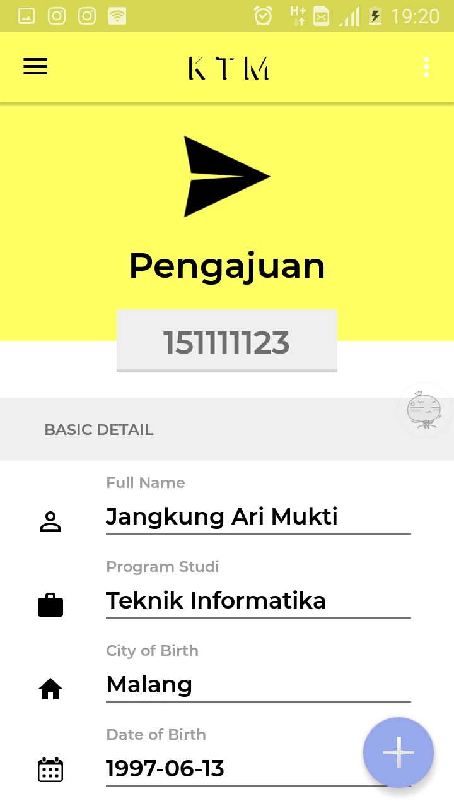
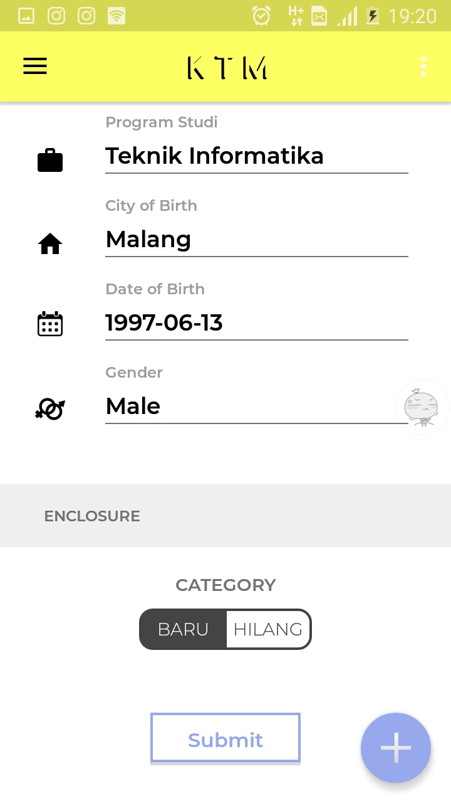
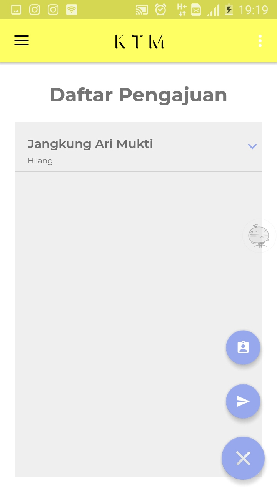
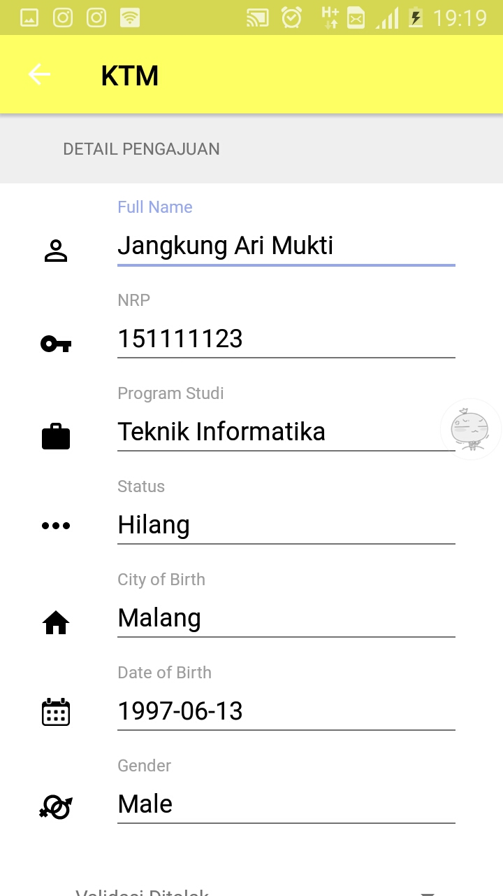
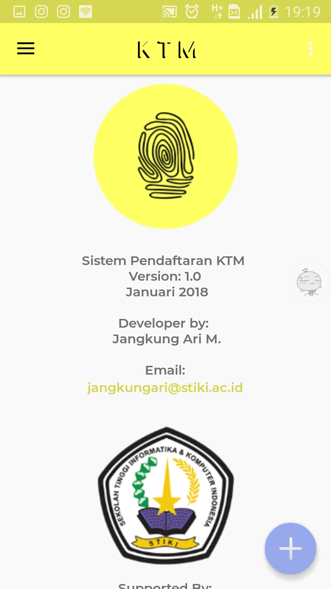

Tampilan awal untuk aplikasi ini adalah dashboard, yang berisi informasi singkat tentang KTM seperti gambar dibawah.
Pada menu Navigasi terdapat beberapa pilihan, Dashboard, About, Help, Login/Logout
Terdapat tombol plus dibawah(floating button) yang jika diklik, akan muncul 2 tombol baru, yaitu informasi profil dari user, dan tombol untuk menuju ke form pengajuan
Sebelum dapat melihat profil atau menuju form pengajuan user diharuskan untuk login terlebih dahulu, dengan menekan tombol login pada menu navigasi.
Setelah login maka bisa melihat tampilan informasi profil user yang telah login, dan bisa diedit jika data tidak valid
Jika data sudah valid maka user bisa menuju ke form pengajuan, user bisa memilih status dari pengajuan apakah baru, atau habis kehilangan.
 Jika user adalah admin maka form pengajuan yang ditampilkan adalah list dari pengajuan
Admin perlu untuk memastikan apakah data yang diajukan valid atau tidak dengan melihat detail
Pada menu abaout terdapat informasi seputar aplikasi
